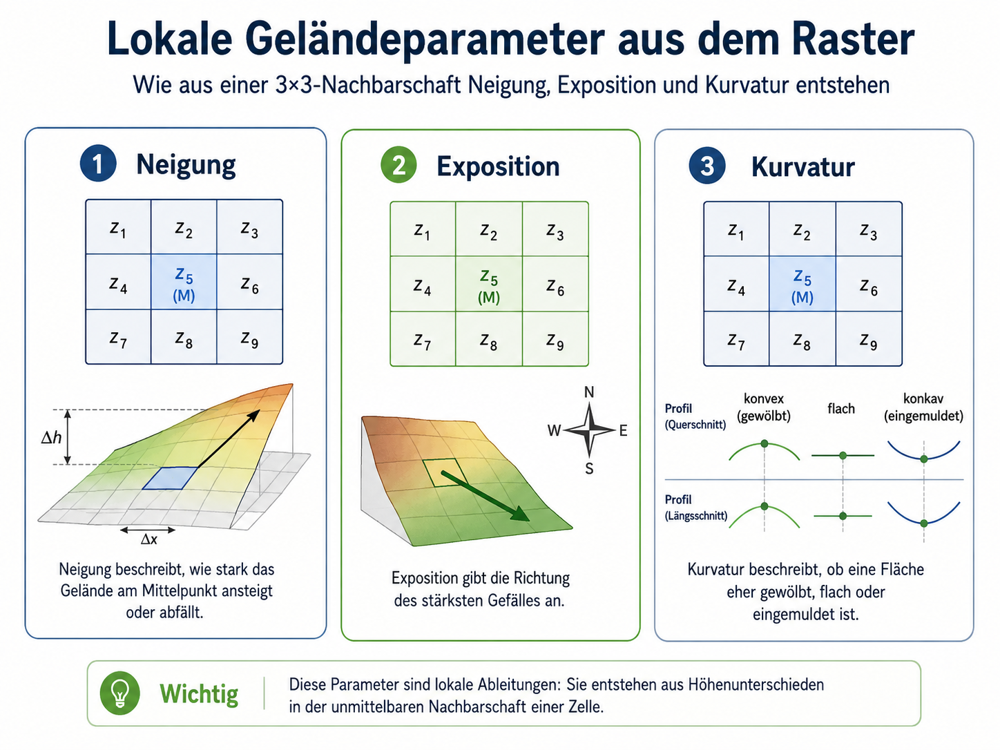
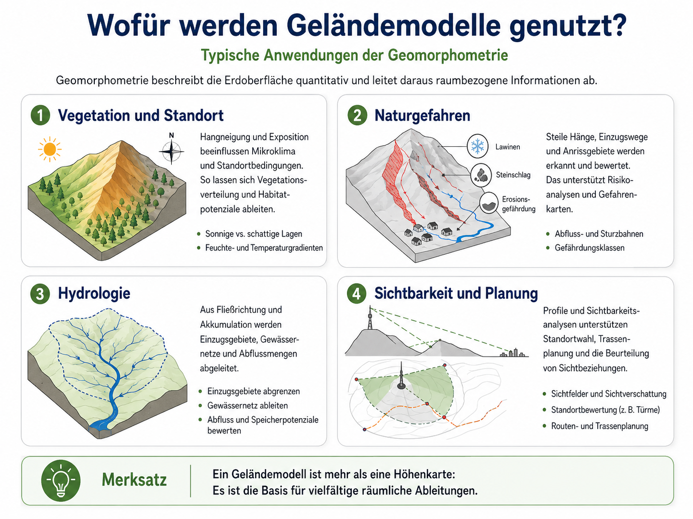

Von der Höhe zur abgeleiteten Information
Digitale Geländemodelle sind eine zentrale Datengrundlage der räumlichen Analyse. Im Rastermodell enthält jede Zelle zunächst nur eine direkte Information: die Höhe. Aus dieser einfachen Höheninformation lassen sich jedoch zahlreiche weitere räumliche Informationen ableiten. Ein DGM ist deshalb nicht nur eine Höhenkarte, sondern ein Ausgangsdatensatz für geomorphometrische, hydrologische, planerische und ökologische Analysen.
Der entscheidende Gedanke ist die Unterscheidung zwischen gespeicherter und abgeleiteter Information. Die Höhe ist im DGM explizit vorhanden. Neigung, Exposition, Kurvatur, Profile, Falllinien oder Einzugsgebiete sind dagegen nicht direkt gespeichert. Sie entstehen erst durch mathematische oder geometrische Operationen auf den Höhenwerten.

Diese Einheit zeigt diese Ableitungslogik an einfachen Beispielen. Im Mittelpunkt stehen nicht einzelne QGIS-Werkzeuge, sondern die Frage, welche zusätzliche Information aus einem Höhenraster gewonnen werden kann und welche Annahmen dabei in die Analyse eingehen.
Geomorphometrie: Gelände quantitativ beschreiben
Geomorphometrie beschäftigt sich mit der quantitativen Beschreibung und Analyse der Erdoberfläche. Sie übersetzt Geländeformen in messbare Parameter. Dazu gehören vor allem Neigung, Exposition und Kurvatur. Diese Größen sind in vielen Anwendungen wichtig, weil sie Standortbedingungen, Prozessrichtungen und räumliche Unterschiede im Gelände beschreiben.
Neigung beeinflusst beispielsweise Abflussgeschwindigkeit, Erosionspotenzial, Erreichbarkeit und Gefährdung durch Massenbewegungen. Exposition beschreibt, in welche Richtung ein Hang ausgerichtet ist, und kann deshalb für Mikroklima, Vegetation, Schneeschmelze oder Strahlungshaushalt relevant sein. Kurvatur beschreibt die Krümmung einer Geländeoberfläche und hilft, Rücken, Mulden, Kuppen oder konkave Sammelbereiche zu unterscheiden.
Damit wird aus Höhe eine analytische Oberfläche. Das DGM wird nicht mehr nur betrachtet, sondern in messbare Eigenschaften der Geländeform übersetzt.
Lokale Reliefparameter
Lokale Reliefparameter entstehen aus der Nachbarschaft einer Rasterzelle. Häufig wird dafür ein 3×3-Fenster betrachtet: Die mittlere Zelle wird mit den acht umliegenden Zellen verglichen. Aus den Höhenunterschieden in dieser Nachbarschaft lässt sich eine lokale Oberfläche schätzen. Aus dieser Oberfläche können Neigung, Exposition und Kurvatur abgeleitet werden.
Die Neigung beschreibt, wie stark die Oberfläche an einer Stelle ansteigt oder abfällt. Sie ist damit ein Maß für die Steilheit des Geländes. Formal lässt sich die Neigung als Verhältnis von Höhenänderung zu horizontaler Distanz verstehen:
\[ \tan(\beta) = \frac{\Delta z}{d} \]
Dabei ist \[\Delta z\] der Höhenunterschied und \[d\] die horizontale Entfernung. Je größer der Höhenunterschied bei gleicher Distanz ist, desto steiler ist die Fläche.
Die Exposition beschreibt die Richtung des stärksten Gefälles. Sie gibt also an, wohin eine geneigte Fläche ausgerichtet ist. In der Praxis wird sie meist als Himmelsrichtung oder Winkel angegeben. Eine südexponierte Fläche hat andere Strahlungs- und Temperaturbedingungen als eine nordexponierte Fläche.
Die Kurvatur beschreibt, ob eine Geländeoberfläche eher gewölbt, flach oder eingemuldet ist. Konvexe Bereiche können Rücken oder Kuppen anzeigen, konkave Bereiche dagegen Mulden, Sammelräume oder potenzielle Abflusskonzentrationen. Je nach Fragestellung wird zwischen verschiedenen Kurvaturformen unterschieden, etwa Profil- und Plankurvatur.

Wichtig ist: Diese Parameter sind lokale Ableitungen. Sie beschreiben nicht das gesamte Gelände, sondern die unmittelbare Umgebung einer Zelle oder eines Punktes. Deshalb hängen sie stark von der Auflösung des DGM und von der Größe des verwendeten Analysefensters ab.
Profile, Pauschalgefälle und Falllinien
Neben lokalen Parametern können aus einem DGM auch linienhafte Informationen abgeleitet werden. Ein Höhenprofil beschreibt die Höhenverteilung entlang einer Linie zwischen zwei Punkten. Dazu werden die Höhenwerte entlang dieser Linie aus dem DGM extrahiert und als Profil dargestellt.
Profile sind besonders nützlich, wenn Gelände entlang einer konkreten Verbindung untersucht werden soll. Das kann eine geplante Straße, ein Wanderweg, eine Sichtlinie, eine Leitungstrasse oder ein Geländeschnitt durch ein Tal sein. Das Profil zeigt, wo die Strecke ansteigt, wo sie abfällt und wo starke Reliefwechsel auftreten.
Das Pauschalgefälle ist eine stark vereinfachte Ableitung aus einem Profil. Es beschreibt die mittlere Neigung zwischen zwei Punkten. Dabei werden lokale Zwischenformen geglättet: Eine Strecke kann im Detail viele kleine Gegensteigungen, Mulden oder Kuppen enthalten, während das Pauschalgefälle nur die Gesamtdifferenz zwischen Anfangs- und Endpunkt berücksichtigt.
\[ \text{Pauschalgefälle} = \frac{\Delta z}{\Delta d} \]
Diese Größe ist einfach zu berechnen und für erste Einschätzungen nützlich. Sie ersetzt aber keine detaillierte Profilanalyse, weil sie lokale Steilabschnitte oder Hindernisse überdecken kann.
Eine Falllinie beschreibt dagegen den Weg des stärksten Gefälles ausgehend von einem Punkt. Sie folgt also nicht der kürzesten geometrischen Verbindung, sondern der Richtung, in der die Höhe lokal am stärksten abnimmt. Damit wird aus der lokalen Gefälleinformation ein gerichteter Pfad.

Die Falllinie ist konzeptionell wichtig, weil sie den Übergang von reiner Geländeform zu Prozessrichtung bildet. Wasser, Steine oder andere gravitationsgesteuerte Bewegungen folgen nicht automatisch einer geraden Linie, sondern einer durch das Relief vorgegebenen Richtung. Genau diese Idee wird in der rasterbasierten Reliefhydrologie später formalisiert.
Einzugsgebiete als flächenhafte Ableitung
Wenn einzelne Falllinien verknüpft werden, entsteht eine flächenhafte Logik. Ein Wassereinzugsgebiet umfasst alle Flächen, deren oberflächlicher Abfluss zu einem gemeinsamen Auslasspunkt gelangt. Es ist damit keine direkt im DGM gespeicherte Fläche, sondern eine abgeleitete Raumeinheit.
Die Grundidee ist einfach: Von jeder Zelle aus wird bestimmt, wohin Wasser dem Gefälle folgend abfließen würde. Alle Zellen, deren Abflussweg denselben Auslass erreicht, gehören zum selben Einzugsgebiet. Damit entsteht aus lokalen Höhenunterschieden eine größere räumliche Struktur.
Einzugsgebiete sind für hydrologische, geomorphologische und landschaftsökologische Anwendungen wichtig. Sie strukturieren Abfluss, Stofftransport, Sedimentbewegung und viele Formen räumlicher Kopplung im Gelände. Gleichzeitig hängt ihre Abgrenzung von der Qualität des Höhenmodells, der Rasterauflösung und der Behandlung von Senken oder flachen Bereichen ab.
Anwendungen geomorphometrischer Ableitungen
Aus Geländemodellen abgeleitete Informationen werden in sehr unterschiedlichen Anwendungsfeldern genutzt. In der Vegetationsgeographie können Neigung und Exposition Hinweise auf Standortbedingungen, Strahlungshaushalt oder Feuchtegradienten geben. In der Naturgefahrenanalyse werden Steilheit, Reliefposition und Abflusswege zur Bewertung von Lawinen, Steinschlag, Erosion oder Sturzprozessen eingesetzt. In der Hydrologie dienen Falllinien und Einzugsgebiete als Grundlage für Abfluss- und Sammelprozesse. In Planung und Infrastruktur können Profile, Sichtlinien und Geländeparameter bei Trassenwahl, Standortbewertung oder Sichtbarkeitsanalysen helfen.

Die gleiche Geländeableitung kann je nach Fragestellung unterschiedlich interpretiert werden. Eine hohe Neigung kann in einer Habitatmodellierung ein Ausschlusskriterium sein, in einer Naturgefahrenanalyse dagegen ein Hinweis auf erhöhtes Prozesspotenzial. Entscheidend ist also nicht nur die Berechnung, sondern die fachliche Einbettung des Parameters.
Interpretation und Grenzen
Geländeableitungen wirken oft objektiv, weil sie aus numerischen Höhenwerten berechnet werden. Trotzdem sind sie modellabhängig. Die verwendete Rasterauflösung, die Herkunft des DGM, die Glättung, die Interpolationsmethode, die Behandlung von Senken und die Wahl des Analysefensters beeinflussen das Ergebnis.
Besonders wichtig ist der Maßstab. Ein grobes Höhenmodell kann großräumige Geländeformen gut zeigen, aber kleine Gräben, Böschungen oder Geländekanten verlieren. Ein sehr feines Höhenmodell zeigt lokale Details, kann aber zugleich stärker durch Messrauschen, Vegetationsreste oder Artefakte geprägt sein.
Außerdem beschreibt ein DGM in der Regel die Geländeoberfläche, nicht unbedingt Gebäude, Baumkronen oder andere Oberflächenobjekte. Für Sichtbarkeit, Mikroklima oder urbane Fragestellungen kann deshalb ein digitales Oberflächenmodell erforderlich sein. Die Aussagekraft einer Ableitung hängt also davon ab, ob das verwendete Modell zur Frage passt.
Anschluss an die rasterbasierte Reliefhydrologie
Die hier dargestellten Ableitungen führen bis zur Idee gerichteter und flächenhafter Geländeprozesse: Lokale Gefälle bestimmen Richtungen, Falllinien beschreiben Pfade, und Einzugsgebiete fassen Flächen mit gemeinsamem Auslass zusammen.
In der anschließenden Einheit zur rasterbasierten Reliefhydrologie wird diese Logik formalisiert. Dort erhält jede Rasterzelle eine lokale Fließrichtung. Daraus entstehen Akkumulationsraster, potenzielle Gerinne, Einzugsgebiete und hydrologische Indexraster. Der Übergang ist damit konsequent: Aus Höhe wird Gefälle, aus Gefälle wird Richtung, aus Richtungen werden räumliche Prozessmuster.
Übung
Laden Sie ein DGM in QGIS und leiten Sie daraus mindestens zwei Geländeparameter ab, zum Beispiel Neigung und Exposition. Wählen Sie zusätzlich eine Linie durch das Untersuchungsgebiet und erzeugen Sie ein Höhenprofil.
Beschreiben Sie anschließend knapp, welche Information direkt im DGM gespeichert war und welche Information erst durch die Ableitung entstanden ist. Vergleichen Sie außerdem, ob Neigung, Exposition und Profil dieselbe Geländeform unterschiedlich sichtbar machen.
Zum Abschluss formulieren Sie für einen der abgeleiteten Parameter eine mögliche Anwendung und eine Grenze der Interpretation.